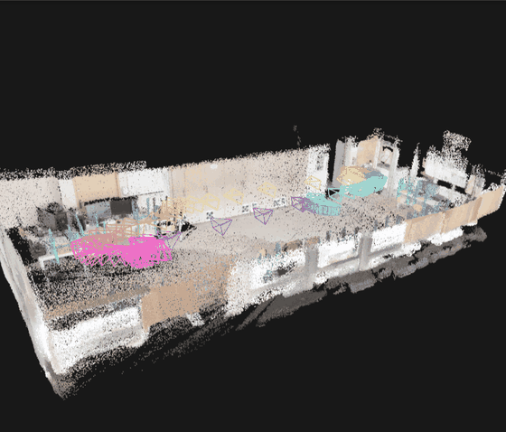
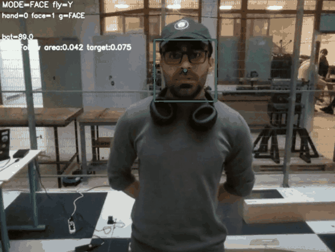
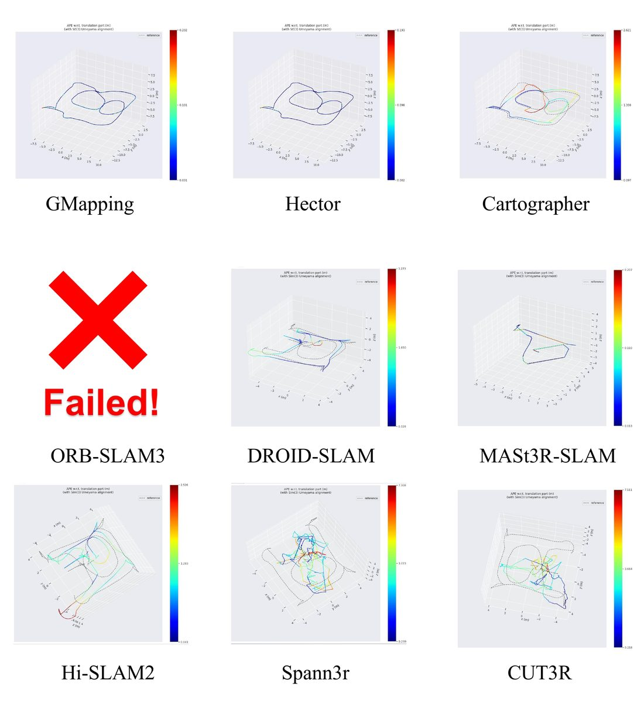
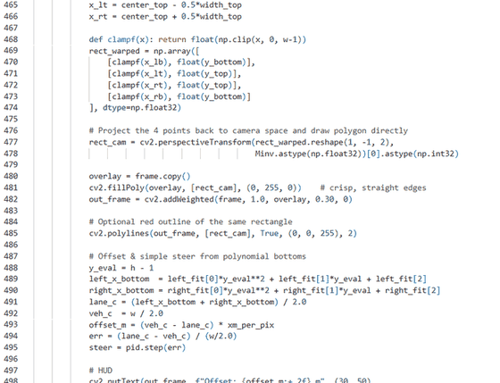

VIDAR: visual-inertial dense reconstruction
📄 First author · arXiv 2026

📄 First author · arXiv 2026

📄 First author · under review

📄 IEEE ICARM 2026 · accepted

📅 Oct 28, 2025

📅 Jan 14, 2026

📅 Oct 12, 2025

📅 Dec 6, 2025

📅 Nov 1, 2025

📅 Dec 5, 2025
Peer-reviewed work, preprints and manuscripts under review.
arXiv:2607.17171 [cs.RO], July 2026 · under review at IEEE ICARCV 2026
Couples SVO visual-inertial odometry with Depth Anything 3 for metric dense monocular mapping. Inertial constraints cut mean trajectory error from 0.898 m to 0.125 m across 11 EuRoC sequences.
Preprint · first authorIEEE ICARM 2026, Université Évry Paris-Saclay, 21–23 July 2026 · to appear in IEEE Xplore
Unified Gazebo/ROS benchmark of 10 SLAM systems across 6 indoor environments on a Quanser QCar, covering 15,547 frames and 1.04 km of trajectory.
AcceptedSubmitted to ARO — The Scientific Journal of Koya University · poster at the IEEE ICARM 2026 Workshop on Safety-Critical Software, Control and Learning for Robotics
MediaPipe hand landmarks with an RBF-SVM (99.71% over 7 gestures) and ArcFace-style ONNX face embeddings (0.32% EER) restricting control to the enrolled operator, under a safety > authorization > control priority order.
Under review · first authorManuscript under review · author-response phase
RGB-only monocular dynamic SLAM with segmentation-free dynamic object filtering, calibration-free tracking and real-time loop closure.
Under reviewA snapshot of the software, tools, and frameworks I use regularly.
Master’s in Smart Aerospace & Autonomous Systems, split between Poznań University of Technology and Paris-Saclay / Évry as a double degree. Since March 2026 I have been a research intern at the IBISC laboratory, working on visual-inertial perception and dense 3D mapping. First author of VIDAR, co-author on an accepted IEEE ICARM 2026 paper, and a reviewer for IEEE ICARCV 2026.
Completed my B.Sc. in Mechanics & Mechatronics at Salahaddin University, graduating second in my department. Delivered two major projects: an IoT-GSM home automation system and an LPG fire-risk reduction study. Strengthened skills in MATLAB, Python, robotics, simulation, and mechanical design.
Worked at Unigaz Co. as a pipeline designer and site engineer while studying. Designed NFPA-compliant LPG networks and oversaw installations across residential buildings. This marked my first professional engineering role and taught me practical fieldwork, safety standards, and technical responsibility.
Relocated to Erbil to begin my bachelor’s studies in Mechanics & Mechatronics. Early university years included robotics, 3D printing, CAD work, microcontrollers, and foundational programming—forming the basis for my engineering identity.
Ranked third across my entire school. Discovered my interest in engineering through mechanics, electronics, early coding, problem-solving, and STEM activities. This period set the direction for my university and career path in robotics and autonomy.
I'm an engineering student passionate about building useful, human-centered technology. I also like penguins :D
I'm Diyari Salih, a robotics and autonomous systems engineering student with experience in mechanics, embedded electronics, and AI-driven perception. After ranking top of my school and completing a Mechanics & Mechatronics degree, I gained hands-on experience in pipeline design, PLC diagnostics, and data modeling. I now study in France and Poland, focusing on UAVs, quadruped robots, ML and AI, path planning, and computer vision while building systems that unite sensing, autonomy, and real-time control.
.png)